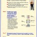
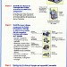
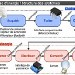

Séquence 35 : Produire, distribuer et convertir une énergie
Compétences du programme (cycle 4) :
- CT 2.2 Identifier le(s) matériau(x), les flux d’énergie et d’information dans le cadre d’une production technique sur un objet et décrire les transformations qui s’opèrent.
- CS 1.6 Analyser le fonctionnement et la structure d’un objet, identifier les entrées et sorties.
Situation Déclenchante
Un élève prend deux photos avec le même appareil, en mode automatique :
- Photo 1 en plein soleil : l’image est nette, bien exposée.
- Photo 2 dans une salle un peu sombre : l’image est floue ou très sombre, alors que l’élève « a juste appuyé sur le bouton ».
Problématique : Comment adapter automatiquement la prise de vue à la quantité de lumière ?
Hypothèses :
Question 1 : Quelles sont les differentes énergies que vous connaissez ?
Question 2 : Qu'est-ce qu'un "système" ?
Question 2 : Qu'est-ce qu'un "système" ?
[chaque élève rédige ses hypothèses dans son cahier]
Activité :
- Activité 1 : s35-fiche-activite-eleves.pdf
Correction :
- Correction activité 1 : s35-fiche-activite-prof.pdf
Ressources activités





Ressources activités
Structuration des connaissances :
Structuration 1 : msost13-structure-systeme.pdf
Structuration 2 : msost14-2-3-flux-energie.pdf